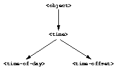

5.2.4 Relationships of the time classes
It is helpful to look at the relationships among the time classes. We show them in Figure 5.1.
Referring to Figure 5.1, we introduce terminology by example:
The
<time-of-day>class is a direct subclass of the<time>class.The
<time-of-day>class is a subclass of the<object>class.The
<time>class is a direct superclass of the<time-of-day>class.The
<object>class is a superclass of the<time-of-day>class.When you make an instance of the
<time-of-day>class, the result is a direct instance of that class.
 |
A direct instance of
<time-of-day>is an indirect instance of<time>and<object>.An object is a general instance of a class if it is either a direct or an indirect instance of that class. The term instance is equivalent to general instance. A direct instance of
<time-of-day>is both a general instance and an instance of<time-of-day>,<time>, and<object>.The
<time-of-day>class is a subtype of the<time>and<object>classes. A class is also a subtype of itself. All classes are types.The
<object>class is a supertype of all the other classes shown. All classes are subtypes of the<object>class. All objects are instances of the<object>class.